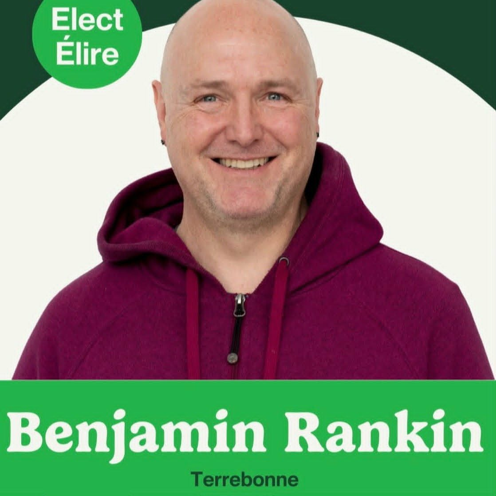

Un leader communautaire prêt à se battre pour le logement abordable, la santé, l'éducation et notre environnement.

D'origine néo-zélandaise, j'ai grandi dans plusieurs pays avant de m'établir au Québec en 1990. Architecte depuis près de 30 ans, j'ai consacré ma carrière à bâtir des infrastructures publiques, notamment des écoles et des hôpitaux, tout en cherchant constamment à réduire notre empreinte écologique.
En tant que père d'une fille de 15 ans et écologiste passionné depuis les années 90, je me suis joint au Parti vert du Canada il y a 7 ans, car c'est la seule formation politique qui rejoint véritablement mes valeurs sociales et environnementales.
L'âge de pouvoir des vieux hommes blancs a eu des effets désastreux pour notre planète et pour nos sociétés. Aujourd'hui, je me présente comme votre candidat pour représenter vos intérêts et bâtir un avenir équitable, sain et durable pour Terrebonne. Il n'y a pas de planète B.
Le droit au logement est inaliénable. Nous devons construire plus de logements sociaux et coopératifs, mettre fin à la spéculation immobilière et implanter des contrôles rigoureux sur les loyers.
Investir massivement dans notre système public, non privé. Nous proposons un revenu minimum garanti pour éliminer la pauvreté extrême et assurer la dignité pour tous, financé par une taxe sur les profits excessifs.
Réseau national électrique 100% renouvelable d'ici 2035 et carboneutralité d'ici 2050. Financement massif pour les rénovations écoénergétiques (Plan Vert) et aucun nouveau projet fossile.
Les jeunes ont besoin d'une voix. Nous voulons instaurer la représentation proportionnelle, abaisser l'âge de vote à 16 ans et éliminer les dettes étudiantes fédérales. Nous bâtirons un Corps des jeunes pour le climat (CJC) offrant des emplois valorisants dans la transition écologique.
Notre belle collectivité compte plus de 113 797 résidents. Nous avons un des plus hauts taux de jeunes familles au Québec. Vous méritez un député qui comprend vos réalités (coût de l'épicerie, hypothèque, transports) et qui vous représentera avec intégrité à Ottawa.